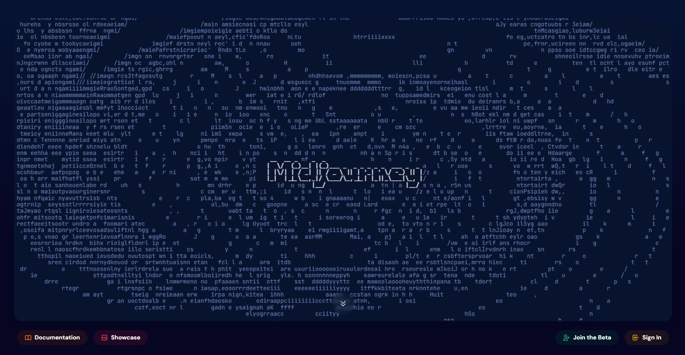

Midjourney
Midjourney - программа на основе искусственного интеллекта, которая создает изображения из текстовых описаний. Она работает на платформе Discord и позволяет пользователям создавать красивые картинки, просто вводя текстовые подсказки. У нее также есть журнал, в котором представлены лучшие произведения искусства искусственного интеллекта, созданные сообществом.
